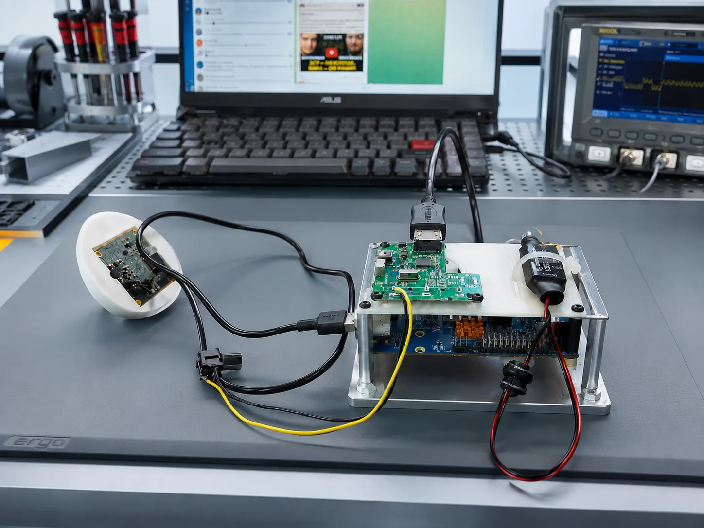
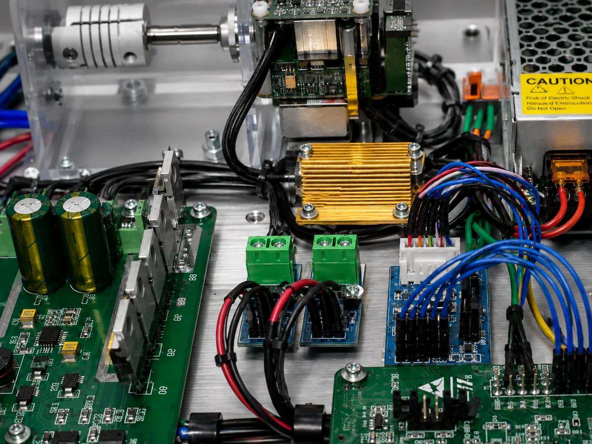
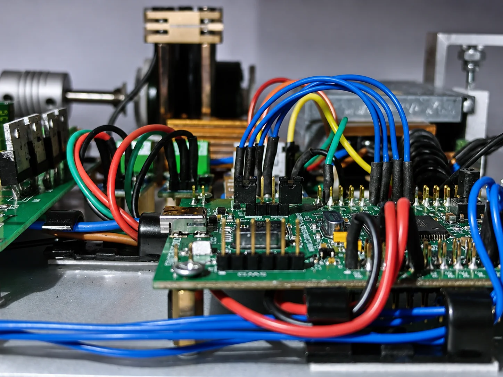
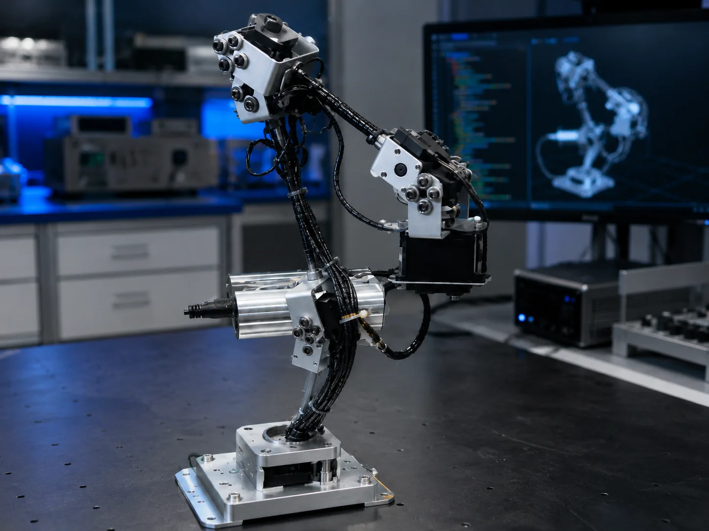
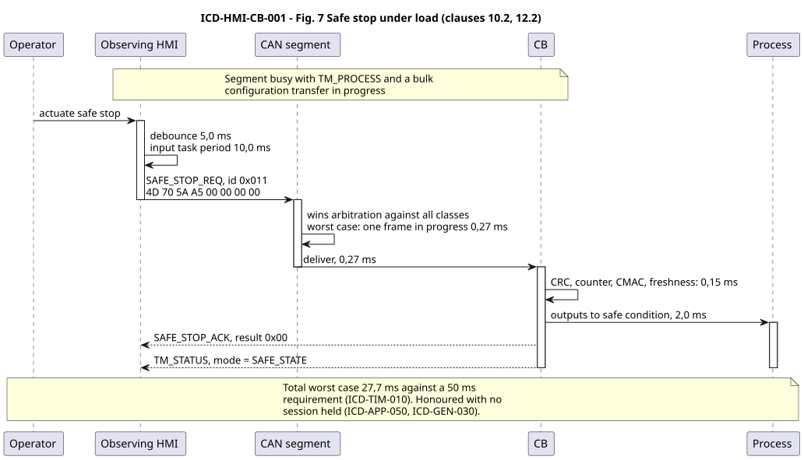
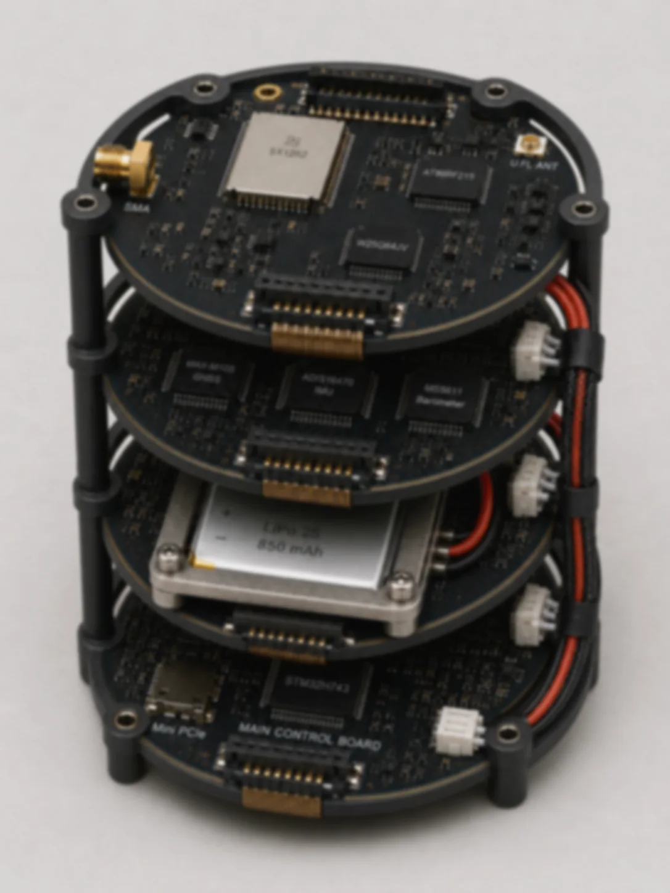
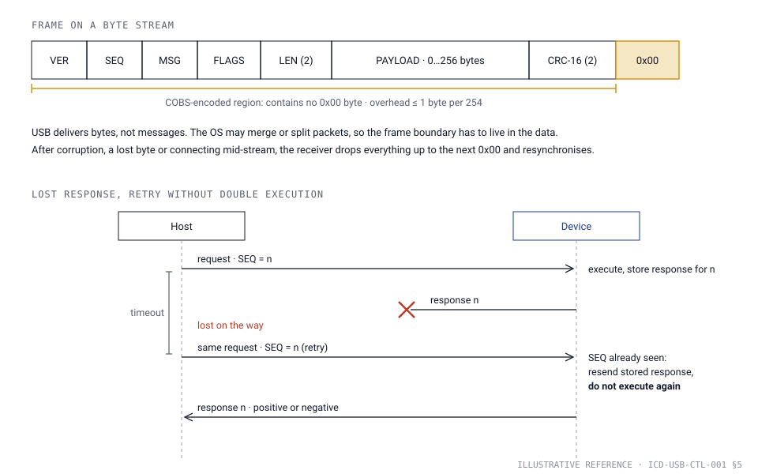
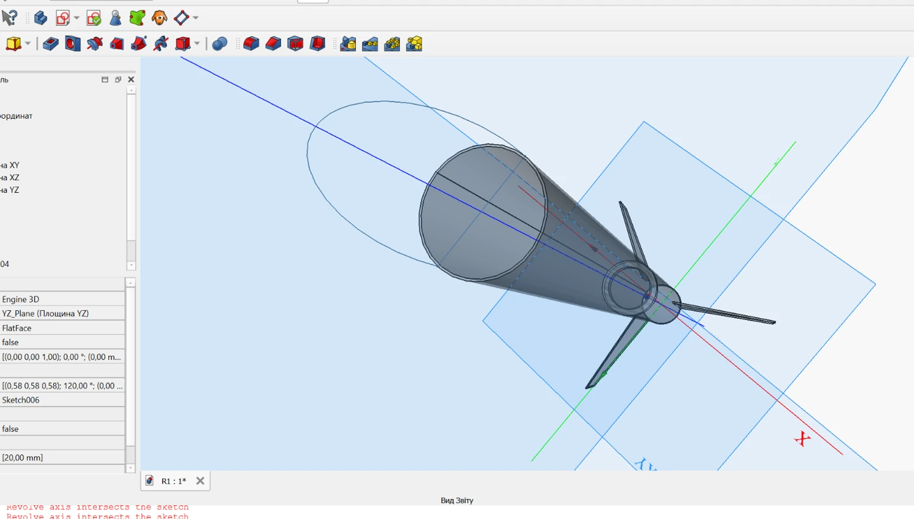

Firmware, protocols and specifications. Taken to a tested prototype.
A small engineering team for embedded systems that need a clear interface, written requirements and firmware that runs on real hardware.

CAN interface for an operator panel and a process controller
27.7 msworst-case safe stop against a 50 ms requirement
View case
Telemetry for first-stage hop tests
130 kmwith a complete ground archive by requirement
View case
Linux inside a compact control stack
≤ 4 spower-on to application-ready, design target
View case
Driverless USB CDC control interface
0 driversCOBS framing, CRC-16, idempotent retries
View case
Compact rocket platform: models before metal
40 cmbaseline, Simulink models and a prototype before detailed design
View caseThree things we do well
Embedded firmware
Linux and ROS 2 on application processors, Zephyr on microcontrollers, minimal Alpine Linux images where boot time and footprint matter.
Firmware developmentCommunication protocols
Message catalogues, framing, timing budgets, E2E protection and failure behaviour, specified so that both ends can be built and tested independently.
Protocol engineeringSystem description and requirements
Scenarios, architecture, authority and failure boundaries; requirements and interface control documents with a verification method for every requirement.
System description and requirementsWhere we apply it
- Automotive and ECU tooling
- Test-bench interfaces and switching, diagnostics, HIL setups, CAN / CAN FD communication, engineering packages for Tier-1 test teams
- Robotics
- ROS 2 nodes and integration, embedded control, simulation scenes, repeatable validation scenarios
- Industrial automation
- Machine HMIs and controllers, production test benches, condition monitoring, equipment modernisation
- Aerospace testing
- Telemetry links, data acquisition, models and test documentation for flight and ground tests
From hypothesis to prototype
Most projects start with an open question. We answer it in this order and leave a document at every step.
- 1
Question
Write the hypothesis and the acceptance criterion: which result confirms it, which rejects it.
Problem statement - 2
Analysis and model
Calculations and a computer model narrow the options before hardware is bought.
Analysis note, model - 3
Prototype
The smallest build that can answer the question: board, firmware, bench, fixture.
Working prototype - 4
Verification
Measure against the acceptance criterion and record what held and what did not.
Test report - 5
Handover
Requirements, ICD, source code and build instructions for the next stage.
Documentation package
How we work
Documentation first
Requirements, interfaces and decisions are written down and traceable. The handover package is part of the work, not an afterthought.
Model before build
Simulation and calculation narrow the options before hardware is bought or code is written.
AI where it is safe
Generated drafts, scaffolds and tests from reviewed documents speed up routine work. Everything is reviewed against the specification.
Handwritten where it matters
Code on the safety path, timing-critical logic and drivers is written and reviewed by engineers.
Tools and platforms
- Operating systems
- Linux (Ubuntu, Debian, Alpine); Windows for host tools and test benches
- Robotics
- ROS 2, ros2_control, MoveIt 2
- RTOS
- Zephyr
- Languages
- C, C++; Python for tooling and tests
- AI
- Whisper (speech to text), Llama-family and other small language models, inference on local hardware
- Computer vision
- YOLO (Ultralytics), OpenCV
- Modelling
- MATLAB / Simulink; QEMU and Renode virtual targets
- Interfaces
- CAN / CAN FD, RS-485, UART, SPI, I²C, Ethernet, USB
- Build and delivery
- Git, Docker, cross-compilation for ARM
Standards we work with
We know these standards and write documentation that fits the processes they require. We do not certify products.
Automotive
- ISO 26262Functional safety
- ISO/SAE 21434Cybersecurity engineering
- Automotive SPICEProcess assessment model
- AUTOSAR ClassicECU software architecture
Aerospace (Europe)
- ECSS-E-ST-40CSpace software engineering
- ECSS-Q-ST-80CSoftware product assurance
- EUROCAE ED-12C / DO-178CAirborne software
Healthcare
- IEC 62304Medical device software life cycle
- ISO 14971Risk management for medical devices
- ISO 13485Quality management context

Start with the question
Tell us what the system is, what you need to know or build, what exists already and when you need the answer.